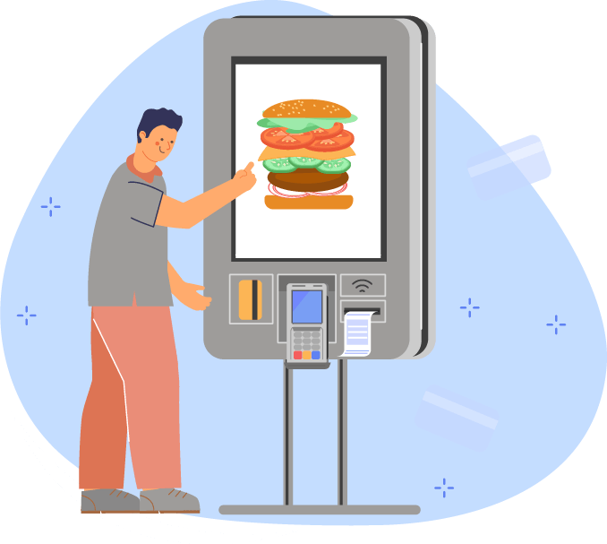

접근성이란, 산업 디자인, 사용자 인터페이스 디자인, 건축, 시스템 공학, 인간공학 분야에서 사용자의 신체적 특성이나, 지역, 나이, 지식 수준, 기술, 체험, 장애유무와 같은 제한 사항을 고려하여 가능한 많은 사용자가 불편 없이 이용할 수 있도록 제품이나 서비스를 만들어 제공하는 것을 말합니다.
대표적으론 웹 접근성(Web Accessibility)이 있으며, 웹 접근성이란 장애인, 고령자 등이 웹 사이트에서 제공하는 정보에 대해 비장애인과 동등하게 접근하고 이해할 수 있도록 보장하는 것을 말합니다.
대표적으론 웹 접근성(Web Accessibility)이 있으며, 웹 접근성이란 장애인, 고령자 등이 웹 사이트에서 제공하는 정보에 대해 비장애인과 동등하게 접근하고 이해할 수 있도록 보장하는 것을 말합니다.